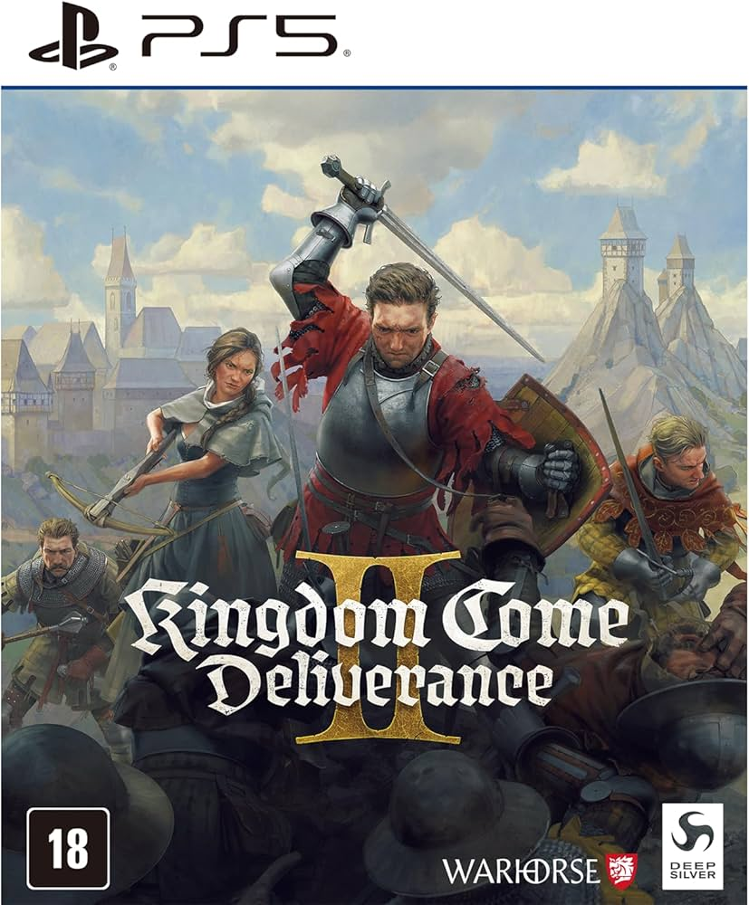

Review: Kingdom Come: Deliverance II
Desenvolvedora: Warhorse Studios
Lançamento: 2025
Plataformas: PlayStation 5, Xbox Series X|S e PC
Gênero: RPG / Mundo Aberto
Um RPG medieval extremamente imersivo e detalhado.
Kingdom Come: Deliverance II expande tudo o que tornou o primeiro jogo especial. A sequência apresenta um mundo ainda maior, mais detalhado e cheio de atividades para os jogadores explorarem.
O realismo continua sendo a principal marca da franquia. Combates, economia, diálogos e progressão foram criados para oferecer uma experiência medieval autêntica.
A narrativa é envolvente e apresenta personagens bem escritos, fazendo com que cada decisão tenha impacto na jornada do jogador.
Graficamente, o jogo impressiona pelos cenários vastos, florestas densas, castelos detalhados e cidades cheias de vida.
Embora o ritmo mais lento possa não agradar a todos, quem procura uma experiência profunda encontrará um dos RPGs mais completos da atualidade.
👍 Prós
- Mundo aberto muito detalhado
- Excelente narrativa
- Grande sensação de imersão
- Combate estratégico
- Visual impressionante
👎 Contras
- Curva de aprendizado elevada
- Ritmo lento em alguns momentos
- Combate pode frustrar iniciantes